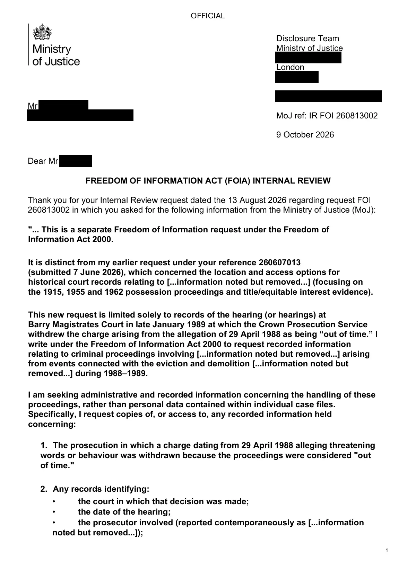

GHF-E106-R111-A1 complaint outcome
IR FOI 260813002 Requester Response.pdf

Transcript
1 OFFICIAL Disclosure Team Ministry of Justice [address redacted] London [address redacted] Requester [email redacted] [email redacted] MoJ ref: IR FOI 260813002 9 October 2026 Dear Requester, FREEDOM OF INFORMATION ACT (FOIA) INTERNAL REVIEW Thank you for your Internal Review request dated the 13 August 2026 regarding request FOI 260813002 in which you asked for the following information from the Ministry of Justice (MoJ): "... This is a separate Freedom of Information request under the Freedom of Information Act 2000. It is distinct from my earlier request under your reference 260607013 (submitted 7 June 2026), which concerned the location and access options for historical court records relating to [...information noted but removed...] (focusing on the 1915, 1955 and 1962 possession proceedings and title/equitable interest evidence). This new request is limited solely to records of the hearing (or hearings) at Barry Magistrates Court in late January 1989 at which the Crown Prosecution Service withdrew the charge arising from the allegation of 29 April 1988 as being “out of time.” I
Read more
write under the Freedom of Information Act 2000 to request recorded information relating to criminal proceedings involving [...information noted but removed...] arising from events connected with the eviction and demolition [...information noted but removed...] during 1988–1989. I am seeking administrative and recorded information concerning the handling of these proceedings, rather than personal data contained within individual case files. Specifically, I request copies of, or access to, any recorded information held concerning: 1. The prosecution in which a charge dating from 29 April 1988 alleging threatening words or behaviour was withdrawn because the proceedings were considered "out of time." 2. Any records identifying: • the court in which that decision was made; • the date of the hearing; • the prosecutor involved (reported contemporaneously as [...information noted but removed...]); 2 OFFICIAL OFFICIAL • the legal basis upon which the summons was determined to be out of time. 3. Records relating to [...information noted but removed...] appearances before the courts during January–March 1989, including any surviving: • cause lists; • court registers; • hearing lists; • minute books; • court log books; • bench records; • administrative case records; • listing records; • prosecution correspondence; • disposal records; or similar recorded information. 4. Records concerning the proceedings heard in Cardiff on or about 23 March 1989, including recorded information showing: • the charges before the court; • which charges were proceeded with; • which charges were withdrawn or discontinued; o the sentence imposed; • any recorded fine; • any credit given for time already spent in custody. 5. Records concerning charges arising from the November 1988 eviction of [...information noted but removed...], including allegations of assault and wanton and furious driving. 6. Any recorded information concerning: • remand or custody records; • warrants; • bail conditions; • injunction-related court administration; • any order restricting [...information noted but removed...] 7. Any retention, destruction or disposal records relating to the above court files, including: • destruction schedules; • retention schedules; • disposal certificates; • archive transfer records; • accession records; • file movement records; • records identifying when and under what authority any files were destroyed or transferred. 3 OFFICIAL OFFICIAL 8. Any file references, case numbers, register entries or archive references relating to these proceedings, even where the substantive files no longer survive. If any of the requested information has been transferred to another body, such as the relevant archive service or another part of HM Courts & Tribunals Service or the Ministry of Justice, please identify the receiving body and any known reference numbers. If any information is withheld, please specify the exemption relied upon, explain why it applies, and disclose all reasonably segregable information. If some parts of this request are more readily available than others, I would be grateful if those could be disclosed without waiting for the remainder..." The purpose of an Internal Review is to assess how your FOI request was handled in the first instance and determine whether the original decision was correct. This review has been conducted independently by a reviewer who was not involved in the original handling of your request. The original response stated that the Ministry of Justice (MoJ) does not hold information within the scope of your request for the purposes of HMCTS and MoJ administrative functions. While records of this nature may previously have been held by the court service, in accordance with applicable records management and retention schedules, court records are retained for specified periods and may subsequently be destroyed or transferred to an approved place of deposit. Having carefully reviewed the handling of your request and the rationale for the original response, I am satisfied that the original decision was correct and compliant with the requirements of the Freedom of Information Act 2000 (FOIA). Statutory Deadline The statutory deadline for your request was the 3 September 2026, and the response was provided on the 12 August 2026. Therefore, the response was compliant with the timeliness requirements of the FOIA. Outcome An FoIA Internal Review re-considers all aspects of the original response, including the decision- making process; therefore, in the interests of fairness, I have considered the original response provided to request FOI 260813002 alongside the decisions made to provide this response. I have also considered relevant Information Commissioner’s Office (ICO) guidance, which can be found in full here: Freedom of information guidance and resources | ICO and here: How to access information from a public authority | ICO. Having completed my review, I remain satisfied that the Ministry of Justice does not hold recorded information falling within the scope of your request for the purposes of section 1(1)(a) of the FOIA. 4 OFFICIAL OFFICIAL I have also considered the age of the records requested. In accordance with relevant retention schedules, such records may have been destroyed or transferred to an approved place of deposit following the expiry of the applicable retention period. The FOIA provides a right of access to recorded information held by a public authority at the time a request is received. It does not require a public authority to create information, recreate records, or obtain information from another organisation in order to respond to a request. As the records referred to in your request are 37 years old, it is likely that any records which were retained beyond their operational purpose would either have been lawfully disposed of in accordance with retention arrangements or transferred to an archive repository. Accordingly, I remain satisfied that the Ministry of Justice does not hold the requested information for the purposes of section 1(1)(a) of the Freedom of Information Act 2000. In accordance with our duty to provide advice and assistance under section 16 of the FOIA, you may wish to contact Glamorgan Archives, which may hold historical records transferred from HMCTS. Further information can be found on the Glamorgan Archives website. Please refer to the following website - Home - Glamorgan Archives. Yours sincerely KILO Operational Support National Support Unit HM Courts & Tribunals Service Appeal Rights If you are not satisfied with this response, you have the right to apply to the Information Commissioner’s Office (ICO). The Commissioner is an independent regulator who has the power to direct us to respond to your request differently, if they consider that we have handled it incorrectly. You can contact the ICO at the following address: https://ico.org.uk/make-a-complaint/foi-and-eir-complaints/ Postal address Information Commissioner's Office Wycliffe House [address redacted] Wilmslow Cheshire [address redacted] 5 OFFICIAL OFFICIAL
Artifact description
A liaison officer sends the outcome of an internal review regarding an earlier Freedom of Information Act request.
| Catalogue ID | GHF-E106-R111-A1 |
|---|---|
| What it is | PDF document from Ministry of Justice / HMCTS. Attached to an email received on 9 October 2026, their reference 260813002. 5 pages. |
| From | Ministry of Justice / HMCTS |
| Email received | 9 October 2026 |
| Their reference | 260813002 |
| Pages | 5 |
| File | IR FOI 260813002 Requester Response.pdf (133 KB) |
| State | Read |
Our integration
Part of the FOI internal review thread with Ministry of Justice / HMCTS opened 9 October 2026. The thread's standing classification is “complaint outcome”.
Concern to test: whether this reply answers the question as asked, or a narrower one. Not checked against the original request wording here.
Related: The covering email · EV-0506 in the evidence catalogue · Timeline · Disclosure Dartboard